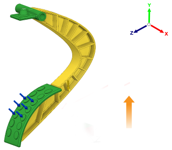

Oriente la pièce moulée dans la matrice dans la direction parallèle à l'axe Y du trièdre et pointe vers l'extrémité positive de l'axe Y.
Les boutons de direction d'éjection vous permettent de définir les directions d'ouverture du moule pour une opération de moulage. Le sens d'ouverture du moule est orienté selon le système de coordonnées global.
 |
REMARQUE: vous pouvez sélectionner plusieurs directions d'ouverture de moule pour une configuration de moulage unique.